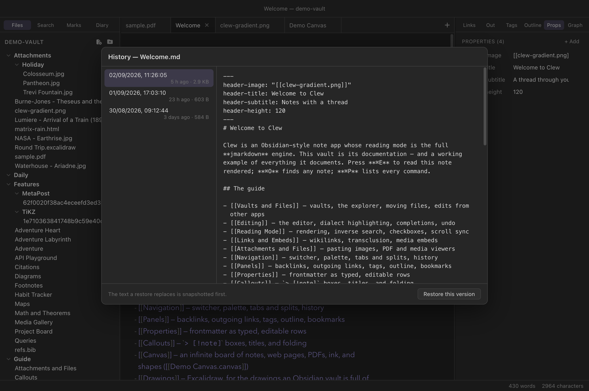

The vault
Note history
Clew auto-saves continuously, and continuous saving cuts both ways: you can never lose the last minute of typing, but the paragraph you deleted an hour ago was saved deleted a second later. Note history is the net under that trapeze. As notes change, Clew quietly keeps snapshots of what they used to say, and a restore is two clicks away — so an over-enthusiastic edit, a bad find-and-replace, or a script gone wrong never costs you real work.
How it works
Whenever a save is about to displace an existing note, Clew first copies
the note's current content into
.clew/history/ — before the new text lands. The layout
mirrors the vault: the history of Projects/Thesis.md lives
in .clew/history/Projects/Thesis.md/, where the note's own
name becomes a folder and each snapshot inside it is a plain Markdown
file named for its moment:
.clew/history/Projects/Thesis.md/
2026-08-30 09.12.44.md
2026-09-01 17.03.10.md
2026-09-02 11.26.05.mdThree details are worth knowing, because they are what make the feature trustworthy rather than merely present:
- Snapshots are plain files. No database, no special format. If Clew were never installed again, the folder would still read as ordinary Markdown, and you could recover any version with Finder and a text editor.
- The timestamp tells the truth. A snapshot is named (and dated on disk) for when its content was last written, not for the moment it was displaced. "What did this note say at 11:26?" is exactly the question the list answers.
- History follows renames. Moving or renaming a note — or a whole folder — takes its history along, the same way renames already rewrite wikilinks.
Not every keystroke becomes a version. During active editing Clew takes
at most one snapshot every five minutes, so an hour of writing leaves a
dozen sensible waypoints rather than three thousand near-duplicates.
Identical content is never recorded twice. Each note keeps at most 40
versions, and versions older than 60 days are pruned — except the
newest snapshot, which always survives, so even a note untouched for a
year has one fallback version. History covers notes
(.md, .jmd) and canvases
(.canvas); attachments, PDFs, and office documents are not
versioned — except that a PDF changed in two places keeps both versions
here (When the PDF
changed elsewhere; not in 0.12.0).
Browsing and restoring
Open a note and run View note history… — from the command palette (⌘P), or File → View Note History. The browser lists every snapshot, newest first, with the selected version's full text beside it; ↑/↓ walk the list.


Restore this version replaces the note's content with the selected snapshot. Restoring is itself guarded: the text being displaced is snapshotted first, unconditionally — so a restore is always reversible from the same dialog, and clicking around in old versions can never lose the current one. An open editor picks the restored text up immediately, the same way it follows any external edit.
.clew/ folder, on
the same disk as the notes they protect. They guard against bad
edits, not against a failing drive or a lost laptop — keep using
whatever backup or sync arrangement you trust for the vault itself.
Turning it off, and tuning it
History is on by default in every vault. Settings → This
vault has the switch (Note history: keep snapshots of notes as they
change), stored as history in
.clew/vault-settings.json. Beyond on and off, the knobs
are hand-edited — set history to an object instead of a
boolean:
{
"history": {
"minIntervalMinutes": 10,
"maxVersions": 20,
"maxAgeDays": 30
}
}
Any key you omit keeps its default (5 / 40 / 60). Toggling the
Settings switch writes a plain boolean, so re-enabling from the UI
resets custom tuning. Deleting a note's folder under
.clew/history/ — or the whole directory — is always safe;
Clew simply starts collecting again.
.clew/history/. Obsidian
ignores the .clew/ folder entirely, so a shared vault
carries its Clew history without either app tripping over the
other.
Reference
| Fact | Detail |
|---|---|
| Location | .clew/history/<note path>/<timestamp> —
plain file copies, layout mirrors the vault. |
| Covers | Notes (.md, .jmd) and canvases
(.canvas). |
| Cadence | At most one snapshot per 5 minutes of editing; identical content never recorded twice. |
| Caps | 40 versions and 60 days per note; the newest snapshot always survives. |
| Restore | View note history… (palette or File menu); the displaced text is snapshotted first, so restores are reversible. |
| Renames | History moves with the note or folder. |
| Setting | history in .clew/vault-settings.json:
false, or
{ minIntervalMinutes, maxVersions, maxAgeDays }. |
| iPad | Identical folder, names and rules; the same command in the palette. One history per vault wherever it syncs. |
See also
- The editor — auto-save, and why disk is the source of truth.
- Vaults and files
— everything else Clew keeps in
.clew/. - Edits from other apps — how open notes follow changes on disk, restores included.
- Settings and hotkeys — the per-vault switches.